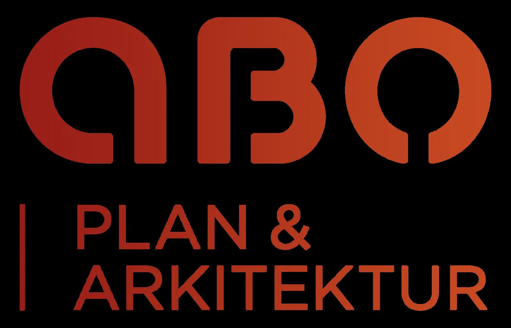

Arkitekt og arealplanleggjar
Fra plan til arkitektur — vi er med hele veien
Vi er et tverrfaglig arkitekt- og plankontor med over 40 års erfaring innen arkitektur, arealplanlegging, prosjektering og byggesaksbehandling.
KontorOs
KontorBergen
Etablert1986
Plantegning · prinsippM 1:100
Illustrasjon: ei enkel plantegning som blir teikna opp. Dekorasjon, ikkje eit prosjekt.
Plan · snitt · målillustrasjon
Fagområde
Det vi gjør
Arkitektur, arealplanlegging, reguleringsplaner, byggesøknader og ansvarlig søker i hele Vestland.

Om kontoret
Bergen og Os, siden 1986
ABO ble startet i 1986. Kontoret startet med to filialer — én i Bergen og én i Os — derav navnet ABO, som står for «Arkitektkontoret Bergen Os».
- Tverrfaglig arkitekt- og plankontor
- Over 40 års erfaring
- Oppdrag i hele Vestland
«Vi er et tverrfaglig arkitekt- og plankontor med over 40 års erfaring innen arkitektur, arealplanlegging, prosjektering og byggesaksbehandling.»
Har dere et prosjekt på gang?
Ta kontakt, så ser vi på planene sammen.